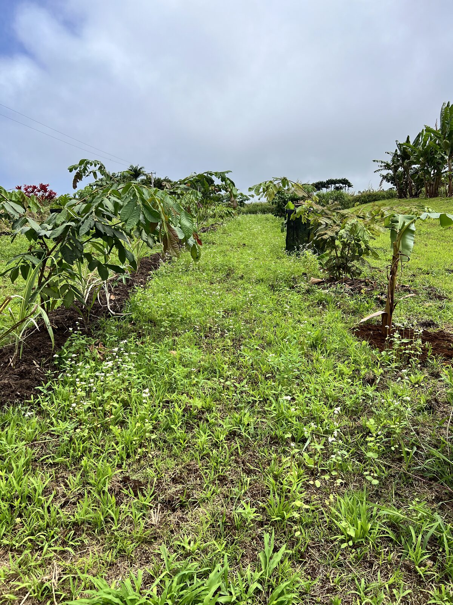
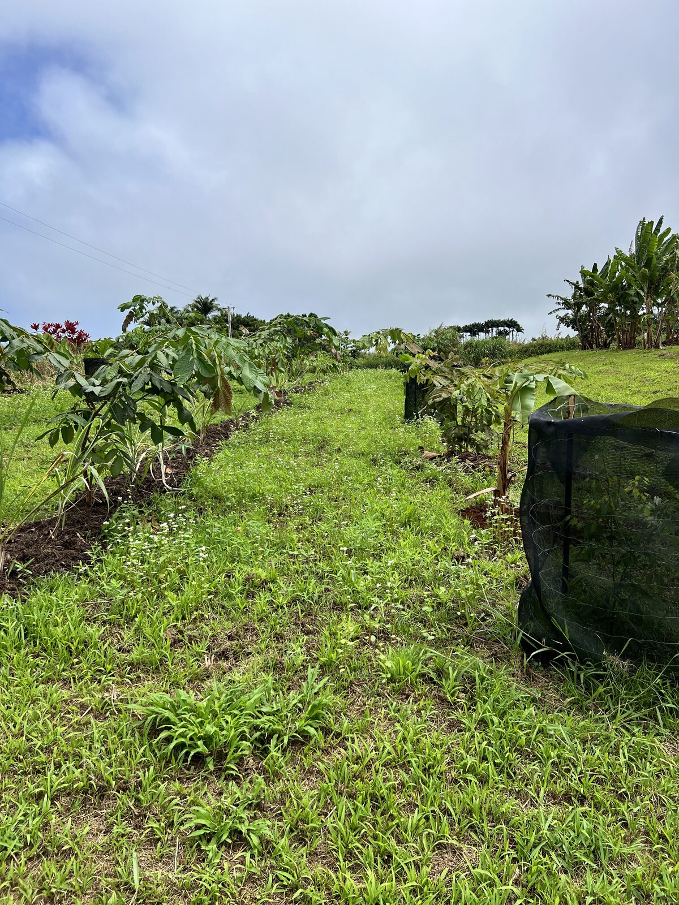
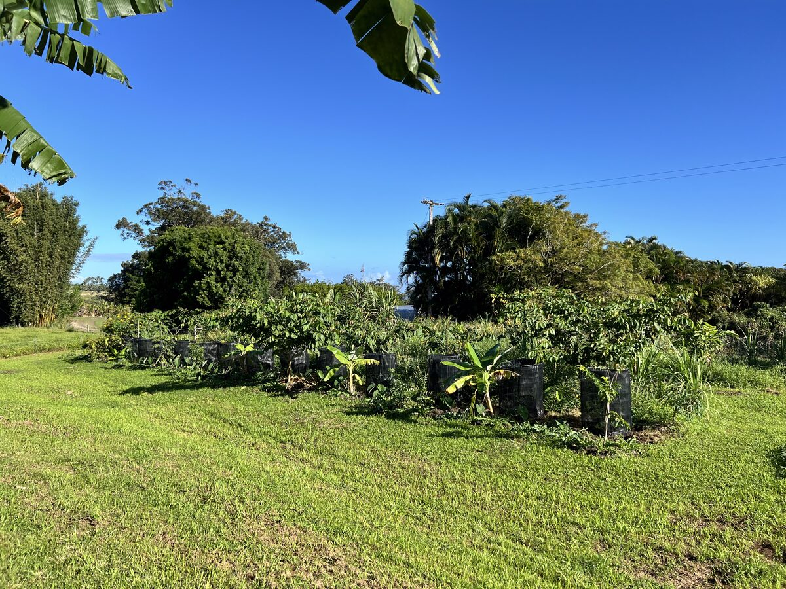
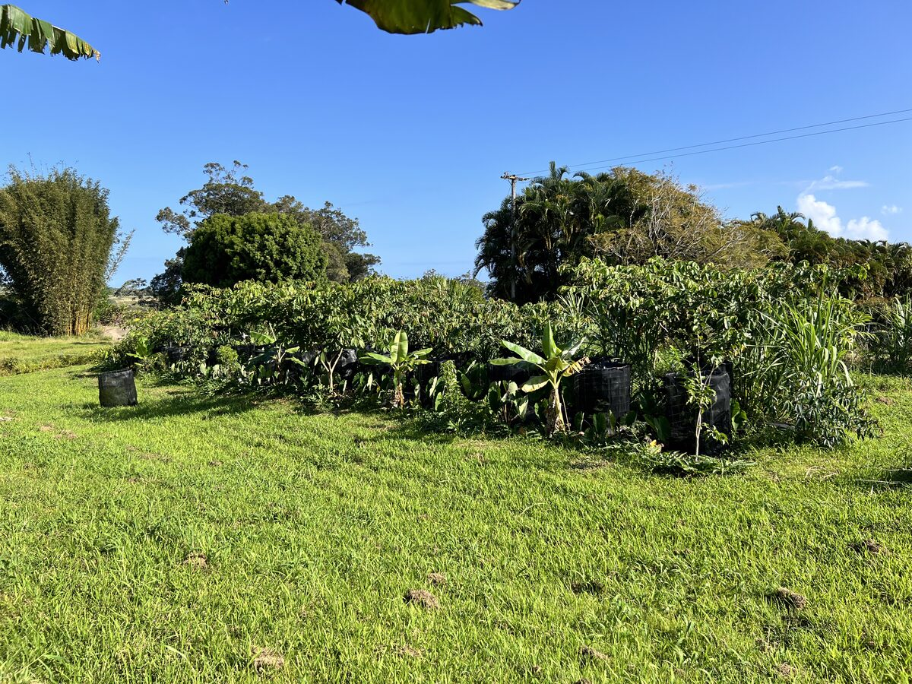

The ʻAwa Agroforest is a syntropic agroforestry system — a method of farming that mimics the natural succession of a forest. Plants are densely planted in rows and regularly "disturbed," meaning certain plants are strategically chopped down and used as mulch to feed the soil and accelerate the growth of the primary crops. This cycle of planting, growing, and chop-and-drop mulching creates a self-reinforcing system that builds fertility with every season.
This system features ʻawa as its primary crop alongside bananas, kalo, sugar cane, fruit trees, and other support plants. Agroforestry in rows like this can be tailored to grow many different kinds of plants, with systems designed around the specific needs and desires of each individual client. The approach is sustainable and holistically healthier for both the soil and the plants — and agroforestry is one important key to sustainable, large-scale production in Hawaiʻi.

Open site before syntropic planting began.

Dense, productive agroforestry rows in full growth.

Young transplants with protective cages, open spacing between trees.

Dense, multi-layered agroforest hedgerow with merging canopies.
Every property has unique potential. Let's discover what yours can become.
Schedule Your Free Consultation